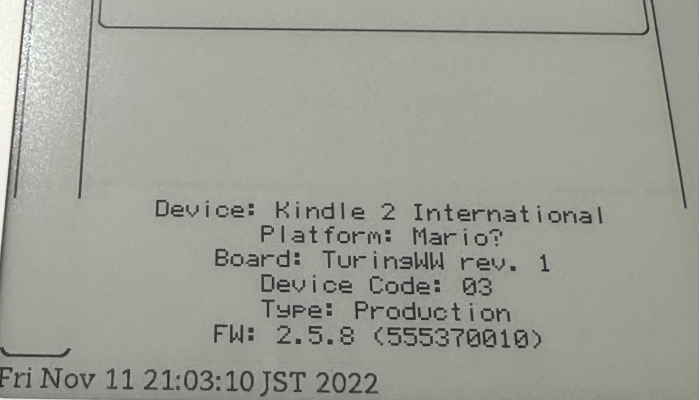
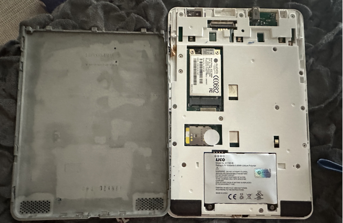
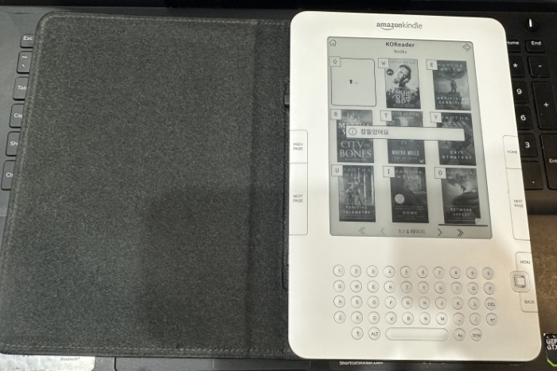

 킨들이라거나 아이팟이라거나, 예전 기기들 뜯어서 배터리 갈아넣고 갖고노는걸 좋아하는거 같은데, 메루까리에서 1800엔인가에 줏은 킨들 2, 이녀석을 샀다가 골치아팠던 이야기다.  일단 배터리가 방전된 상태였고 충전도 안되는 상태여서, 배터리 교환을 위해 뜯어보니 무시무시하게 부풀어 오른 배터리가 있었다. 아이팟도 오래된모델을 사면 이렇게 된 경우가 있는데 무섭다.. 그러고나서 들어가보니, 예전 소유자이름으로 등록이되어있었고, 킨들 2는 와이파이가 지원되지 않기때문에, 나는 그대로 두고싶었지만 탈옥(winterbreak로 검색하면, k2는 다른 방법으로 해야하지만 정보를 찾을 수 있다)이 잘 되지않아, 버전이 낮은탓인가? 하고 업데이트를 진행 킨들 위스퍼넷 3G가 안잡힘! 이거 서비스 종료했다던데! 그래서 가짜로 등록하는 핵을 사용해서 일단 등록> 하고 탈옥진행 그래도안됨. 왠일로 3G에 접속됨, 아마존 로그인이 안됨. 이건 앱으로 인증하던 로그인 설정을 바꾸서 폰으로 숫자를 받고, 비밀번호뒤에 숫자를 붙여서 로그인하는걸로 어째해결  그런데 KUAL설치가 계속안되는거다... 이걸로 한 1주일 머리싸맨듯 결론은, KUAL최신버전, MKK(keystore)최신버전을 사용하면, 무엇때문인지 킨들 2에서는 KUAL이 실행이 안됨 이거 안되요 라고 사람들이 달아놓은, 모바일리드나, 레딧에 올라온 조각정보를 생각날때마다 모아모아 이리저리해보니 결론은, 예전버전 KUAL, MKK예전버전, 에 'usbNetwork를 사용해서, 킨들 2 날자를 과거로 돌리는 것이었다. 어쩌면 나중에 업데이트 되어서 쉽게 설치가능 할 수도 있겠지만, 일단은 안되서 답답하던게> 알아내서 기분좋음 이거진짜 무슨 탐정이 추리하듯이 머리를 굴려가며 사람들이 조각조각 남겨놓은 댓글의 정보를 수집해서 얻어내서 결국은 킨들2에서 코리더 띄우는데 성공. 코리더 킨들 2에서 좋은점은, 일어 한국어 러시아어 등.. 정식 펌웨어에서 깨지는 문자들이 잘보임. 단점 , 3G 위스퍼넷모델이고, 게다가 임의로 시간을 과거로 돌려놓은터라, 코리더의 편리한 클리우드 저장소 기능을 못씀. 그런데 어차피 자주 쓸 기기는 아니라서 그냥 좋아하는 책들 몇개 때려넣어놓고 가지고 놀면 될듯. 스피커 달린 모델이라, 오디오북 넣어놓고 틀으니 좋긴하더라.